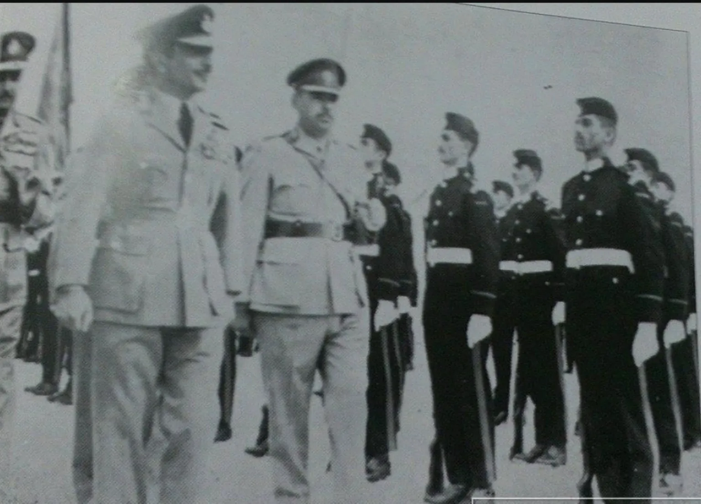

المعلومات الشخصية
- الاسم: شاكر أحمد حسن أبو حمور
- تاريخ ومكان الولادة: 1951 – مدينة السلط، المملكة الأردنية الهاشمية
- الجنسية: الأردنية
- اللغات: العربية، الإنجليزية، الروسية
- الهواية المفضلة: كرة اليد

نبذة عن الشخصية
العميد الركن المتقاعد شاكر أحمد أبو حمّور، ضابط رفيع المستوى خدم في القوات المسلحة الأردنية لمدة (46) عاماً، منها (26) عاماً في الخدمة العسكرية الفعلية، قضى جلّها في الفرقة الآلية 12 الملكية (المنطقة العسكرية الشمالية) حيث تنقل خلالها في مناصب قيادية وميدانية متعددة، أما السنوات الـ(20) الأخرى، فقد أمضاها في مجال الإعلام العسكري إذاعة القوات المسلحة الأردنية؛ مما أكسبه خبرة طويلة في الميدان، وخبرة واسعة في القيادة والإدارة العسكرية، إلى جانب خبرته في مجال الإعلام العسكري.
يُعد من الضباط الذين جمعوا بين الالتزام العسكري والخلق الرفيع. تميز بجديته العالية، وعمق إيمانه بالله، وحرصه الدائم على الصدق والأمانة في كل ما تولاه من مسؤوليات. عُرف بكرمه وتواضعه وشجاعته، وكان مثالاً في الانضباط العسكري، والوفاء، والانتماء للوطن، حيث ترك بصمة واضحة في كل موقع خدم فيه، سواء في الميدان أو في مجال الإعلام العسكري.
جعل من الصدق والإخلاص منهجًا لا يتغير، يقول الحق كما هو دون تزييف، ويُقدَّر لموقفه الثابت وصراحته النابعة من مبدأ، حتى لو لم تُعجب كلمته البعض، فهو لا يعرف التلون ولا يجيد الالتفاف، بل يسير على خطٍ مستقيم تُحترم فيه كلمته قبل أفعاله.
المؤهلات العسكرية
التحق بمدرسة المرشحين – القوات المسلحة الأردنية وتخرج برتبة تلميذ مرشح عام 1970 - صنف دروع.
تلقى العديد من الدورات العسكرية التأسيسية والمتقدمة داخل الأردن وخارجه، في عدة مجالات، كمجالات في القيادة، الإدارة، والتخطيط العسكري.
الفائز الأول بدورة الصاعقة رقم 39 عام 1974.
حاصل على بكالوريوس في العلوم العسكرية/ جامعة مؤتة.

المسيرة العسكرية
- بدأ خدمته في وحدات الجيش العربي وتدرج في المناصب التالية:
- قائد فصيل إشارة.
- ركن عمليات كتيبة مشاة آلية.
- أركان حرب كتيبة آلية.
- قائد سرية كتيبة آلية.
- مساعد قائد كتيبة دبابات.
- ركن أول إمداد وتجهيز فرقة آلية.
- قائد كتيبة آلية.
- قائد مجموعة إسناد إداري ولوجستي لفرقة آلية.
- مدير أركان لواء آلي.
- رئيس شعبة الإعلام العسكري.
- مدير تحرير مجلة الأقصى العسكرية (1993-1996).
- رئيس الوفود الإعلامية لقوات حفظ السلام الأردنية (1993-1996).
- ضابط إدارة ومساعد الملحق الدفاعي موسكو - الاتحاد السوفيتي (1980-1982).
الخبرة الإعلامية
- ترأس الشعبة المسؤولة عن الإعلام في مديرية التوجيه المعنوي.
- المنسق العام لبرنامج الجيش العربي.
- مدقق ومعد برامج - إذاعة القوات المسلحة الأردنية.
ما بعد الخدمة العسكرية
- أُحيل إلى التقاعد برتبة عميد ركن دروع عام 1996.
- أعيد تعيينه مدنياً في عام 1997 كمدقق ومعد برامج في إذاعة القوات المسلحة الأردنية – الجيش العربي، والتي كانت قد بدأت عملها في الأول من آذار عام 1998 تحت اسم "صوت النهضة"، قبل أن يتم افتتاحها رسميًا من قبل جلالة الملك عبدالله الثاني في الثالث عشر من تشرين الثاني عام 2001.
- استمر في هذا الدور حتى عام 2017، وترك بصمة مميزة في العمل الإذاعي العسكري.
- ساهم في إعداد وإنتاج برامج توعوية وثقافية ذات طابع وطني وعسكري، ركزت على رفع الروح المعنوية لدى الجنود وتوعية المجتمع المدني بدور القوات المسلحة.
- عضو تجمع البلقاء للمتقاعدين العسكريين.
- رئيس مجلس إدارة شركة الأورواسيوية للنقل البحري، وعضو مجلس إدارة لعدة شركات.
- يحرص على تنمية المجتمع المحلي والتواصل والنشاطات الاجتماعية.
الأوسمة والإشارات
موسوعة عسكرية ومعرفية مصغرة 1
📚 لمحة عامة عن بعض المسميات والتشكيلات العسكرية:
- - الفصيل العسكري
- - السرية العسكرية
- - ركن عمليات كتيبة آلية
- - الكتيبة العسكرية
- - مجموعة الإسناد الإداري واللوجستي
- - اللواء وحدة عسكرية - لواء آلي
- - الفرقة العسكرية في التاريخ الحديث
- - الفيلق العسكري
- - الإعلام العسكري – موازنة الواجب المهني والأمن الوطني
- - التسلسل الهرمي للوحدات العسكرية
- - الحرب السيبرانية
- - الحرب الإلكترونية
- - الكفاءة الميدانية والإدارية في التشكيلات العسكرية
- - التحول الرقمي في الجيوش الحديثة
- - الرتب العسكرية للضباط مع مهام كل رتبة – منظور عالمي
- - الرتب العسكرية للأفراد وضباط الصف – التعريف والدور من منظور عالمي
- - تطور الصواريخ من V1 إلى الفرط صوتية
- - تكنولوجيا الدبابات الحديثة
موسوعة عسكرية ومعرفية مصغرة 2
📚 مواضيع معرفية عامة:
- - الذكاء الاصطناعي الثورة الرقمية التي تغيّر العالم
- - برنامج ChatGPT وأدوات الذكاء الاصطناعي: المفهوم، التحديات والمستقبل
- - الواقع الافتراضي والواقع المعزز
- - الطاقة المتجددة - المصادر، الفوائد والتحديات
- - النظام والانضباط
- - الذكاء العاطفي المفهوم، المكونات، التأثير
- - الابتكار الرقمي والقيادة في النقل البحري – الدكتور زيد شاكر أبو حمور
- - الأثر الاقتصادي والتحولات التشغيلية في النقل البحري الذكي
- - تكنولوجيا النقل البحري
- - التحول الرقمي في التعليم – هل سينتهي دور المعلم التقليدي؟
- - الولاء والانتماء
- - الموظف المثالي – الركيزة الذهبية لأداء المؤسسات
- - الأقمار الصناعية – الأنواع، الاستخدامات، الأدوات
- - نظام GPS المفهوم، المكونات، الاستخدامات
- - الإنترنت الفضائي – المفهوم، التطور، الفوائد والتحديات
- - التحول الرقمي – الدليل الشامل
- - إنترنت الأشياء - المفهوم، التطبيقات
- - الثورات الصناعية - من البخار إلى الذكاء الاصطناعي
- - عالم الروبوتات – من البدايات إلى المستقبل
- - أقمار ستارلينك: من الفكرة والبداية إلى الشبكة العالمية الحديثة
- - المضائق والممرات المائية شرح علمي ومعرفي واستراتيجي
- - مضيق هرمز: الموقع الجغرافي والأهمية الاستراتيجية والاقتصادية والقانونية
- - الاقتصاد العالمي والطاقة - دراسة شاملة
- - الذباب الإلكتروني: سلاح الحروب الرقمية وتأثيره على الرأي العام
الانتماء العشائري
ينتمي إلى عشيرة أبو حمور، وهي عشيرة أردنية مستقلة ذات جذور عريقة في مدينة السلط.
عُرف عنه
- شخصية عسكرية بارزة، عُرف خلال خدمته بانضباطه، حكمته، شجاعته، وحنكته القيادية.
- ترك أثراً طيباً في كل المواقع التي شغلها، وكان محل احترام وتقدير لدى الجميع.
- زوج السيدة الفاضلة أسماء أبو حمّور (فضيه)، والد كل من أحمد، والضابط الجمركي حسن، والدكتور زيد، وليث، والمهندسة آلاء، ونجم الدين، والقبطان كمال، والدكتورة آية، والدكتور محمد نور، ومحمود خير، وتسنيم.
صور من الأرشيف





📚 مصادر ومرجعيات موثوقة: